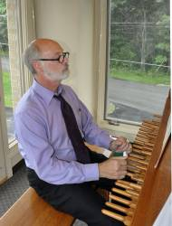

Dennis Curry
August 26, 2012

Dennis Curry is Carillonneur and Associate Music Director at Kirk in the Hills, in Bloomfield Hills, Michigan. His carillon studies began with Dr. Frederick Marriott, and he advanced to Carillonneur member of the Guild of Carillonneurs in North America (GCNA) in 1989. President of the GCNA for 6 years, Dennis has also served on the Board of Directors and as juror on the Guild's Student Examination Committee. He was a member of the Executive Committee of the World Carillon Federation (WCF), serving as its Treasurer and Vice-President. In 2001 with the support of the Kirk, he hosted the 59th Congress of the GCNA, which honored the centennials of Percival Price and Frederick Marriott. He supervised the formation of the Marriott Memorial Library and the complete renovation of the Kirk carillon – the world's largest (77 bells).
In 2011, he hosted the WCF World Congress, celebrating the 75th Anniversary of the GCNA – which was the largest gathering of carillonneurs in history.
A carillon recitalist in the USA, Europe and Asia, Dennis has also performed in several prestigious international carillon festivals – Springfield (2002), Historic Bok Tower & Sanctuary (2003), Løgumkloster (2007), and Centralia (2002/2009). His other musical endeavors have included Section Leader for the Detroit Symphony Chorale & Chorus, President of the Kenneth Jewell Chorale, and appearances as organist and vocalist at area churches and synagogues. He retired from Ford Motor Company after 38 years as Regional Manager for Environmental & Safety Engineering in Eastern/Central Europe, Central Asia, Middle East and Africa. He is now consulting as the global regulatory strategist for Navistar International.